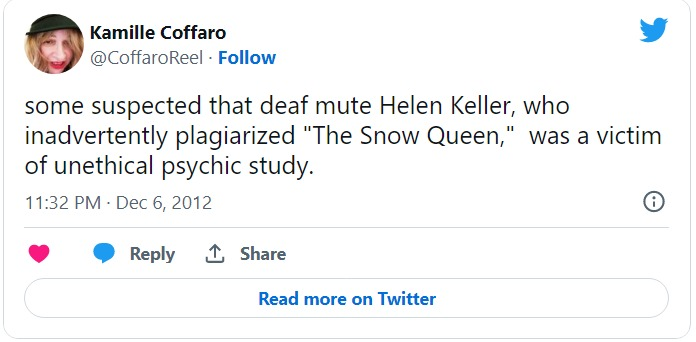

Report Cases of Plagiarism
Following are Top 10 Plagiarism Cases in History
1. A speech made by Melania Trump vs. Michelle Obama
In 2016, Melania Trump has been accused of plagiarism for a speech she made at the Republican National Convention.
July 2016:
Melania Trump plagiarized Michelle Obama’s speech!
May 2018:
Melania Trump publishes an online booklet that’s identical to the one published by the Obama admin. in 2014!
My university would expel me immediately if I pulled a stunt like this once… she did it twice! pic.twitter.com/xQY4Ri3bqp
— Brenna Simon (@BrennaSimonSays) May 8, 2018
In that speech, she mentioned the values of hard work and respect that her parents tried to instill in her when she was younger. Former First Lady Michelle Obama described the same values, in a very similar way, in a speech she made in 2008, and the internet was quick to notice this after Melania Trump’s speech.
2. Harry Potter and the Goblet of Fire by J.K. Rowling vs. Adrian Jacobs
J.K. Rowling, the author of the Harry Potter series, has also been accused of plagiarism. The estate of British author Adrian Jacobs claims that she stole many of her ideas for Harry Potter and the Goblet of Fire from a book named The Adventures of Willy the Wizard.
Fortunately for J.K. Rowling and for Harry Potter fans, the famous author and her publisher won the case.
3. The Lord of the Rings series by J.R.R. Tolkien vs. Richard Wagner
J.K. Rowling is not the only author of a successful and popular book series to have been accused of plagiarism. J.R.R. Tolkien, author of The Lord of the Rings, has been accused of copying many ideas from Ring of the Nibelung, an opera composed by Richard Wagner.
Tolkien has denied this claim, and many people are saying that the Wagner opera was simply used as an inspiration for his book series.
4. The game Pong created by Atari vs. Magnavox
During the 1970s, the founders of Atari have been accused of plagiarism by Magnavox, the game makers responsible for the Odyssey gaming system. According to them, Atari had seen their own tennis game, and copied it to create their game Pong.
The case went on for a long time, before finally reaching an out of court settlement between the two parties involved.
5. The Da Vinci Code written by Dan Brown
Dan Brown, author of The Da Vinci Code, has been accused of plagiarism on two different occasions. Authors Michael Baigent and Richard Lee have accused him of copying their book The Holy Blood and the Holy Grail, but lost the case.
Author Lewis Perdue has also accused Brown of plagiarising his book Daughter of God. The court eventually refused to hear his case.
6. Art pieces created by Andy Warhol
Andy Warhol, a leading figure of the pop art movement, has been involved in many lawsuits for his use of photographs in his silk-screened art pieces, which was considered plagiarism since he did not have the permission to use them.

Whether those cases were settled in or out of court, Warhol had to pay a royalty to the photographers who created the images he had been using.
7. A story written by Helen Keller when she was just 11 years old
Helen Keller is mostly known for being an influential activist, as a deaf and blind woman who overcame many challenges related to her disabilities. But she has also been accused of plagiarism for a story that she wrote when she was 11 years old.

Her story, The Frost King, was found to be very similar to The Frost Fairies, a story written by Margaret Canby.
8. The song My Sweet Lord released by George Harrison
My Sweet Lord was the first single released by George Harrison as a solo artist. He was almost immediately taken to court for copying the melody of He’s So Fine, a song by The Chiffons.
He was found guilty of unintentional plagiarism, and he bought the publishing company that owned the song. The Chiffons eventually recorded their own version of My Sweet Lord.
9. Seeds of Hope written by Jane Goodall
Primatologist and anthropologist Jane Goodall, mostly known for her work with chimpanzees, has also been involved in a case of plagiarism involving Seeds of Hope, a book she wrote with co-author Gail Hudson.
The book was found to contain text taken from different online sources, including Wikipedia. Goodall apologized for what she called a careless mistake, and her book was revised before finally being published.
10. A dissertation written by Martin Luther King Jr.
Martin Luther King Jr., a well-known leader of the civil rights movement, has been accused of plagiarism many years after his death for a dissertation he had written.
When his widow donated the document to the King’s Paper Project, it was found that parts of it had been copied from other authors. It was however believed that he had acted unintentionally.